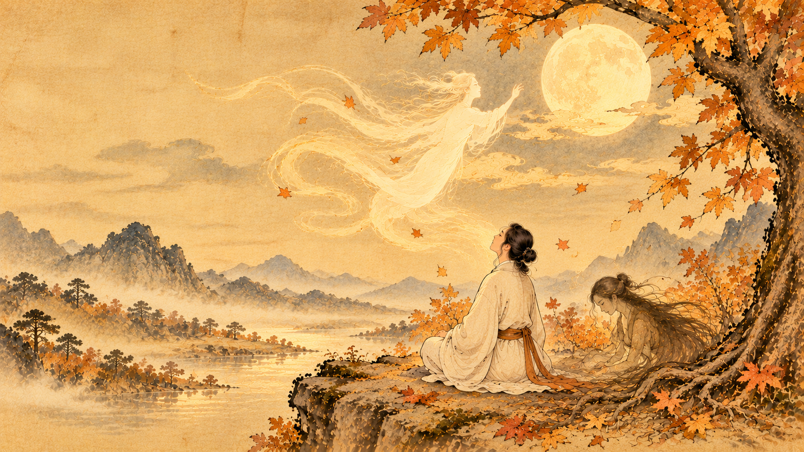

Halloween, le Hun et le Po : que nous apprend la médecine chinoise sur le corps et l'esprit ?
Quel rapport entre Halloween, l'automne, le Poumon, le Foie et les différentes dimensions de l'esprit en médecine chinoise ? À première vue, aucun. Et pourtant… tu me connais : c'est souvent là que commencent mes détours préférés.

« Bon, prenons un exemple. Demain, tu meurs ! »
Lorsque j'enseignais en présentiel, il m'arrivait de partir d'une question toute simple. À l'approche d'Halloween, je lançais à mes élèves : « Bon, prenons un exemple. Demain, tu meurs ! »
Évidemment, la réaction ne se faisait pas attendre : « Comment ça, demain je meurs ? J'ai pas envie de mourir ! »
Et voilà. Nous étions partis pour parler du Hun, du Po, du Yin et du Yang, des cinq mouvements, des saisons et de ce que les traditions chinoises racontent du lien entre le corps et l'esprit. Le cours prévu ? Il attendrait un peu !
Mais pourquoi faire un tel détour ? Parce qu'en Shiatsu, apprendre des noms de méridiens ne suffit pas. Ce qui compte, c'est de comprendre comment les notions se répondent et ce qu'elles nous invitent à observer chez la personne qui vient nous consulter.
Le Hun et le Po : deux dimensions de l'esprit selon la tradition chinoise
Dans la pensée médicale chinoise classique, l'être humain n'est pas envisagé comme une addition de pièces séparées. Le corps, les émotions, les fonctions énergétiques et les dimensions de l'esprit sont pensés dans leurs relations.
Le Hun : associé au Foie et au mouvement Bois
Le Hun (魂) est traditionnellement associé au Foie et au Bois. Dans certains commentaires classiques, on le relie à l'élan, aux projets, à l'imagination, au mouvement et à la capacité de se projeter au-delà de l'instant présent.
Les représentations traditionnelles évoquent parfois le Hun comme une dimension plus subtile, dont le devenir après la mort est décrit en relation avec le Ciel. Il s'agit ici d'une lecture symbolique et spirituelle issue de traditions chinoises, non d'un fait scientifique démontré.
Le Po : associé au Poumon et au mouvement Métal
Le Po (魄) est traditionnellement associé au Poumon et au Métal. Il est souvent présenté comme la dimension corporelle et sensible de l'être : les sensations, la présence incarnée, les réactions immédiates, la relation au souffle et à la matière.
Dans certaines conceptions traditionnelles de la mort, le Po est décrit comme retournant à la Terre. Là encore, nous parlons de cosmologie et de symbolisme, pas d'une description médicale vérifiable de ce qui se produit après la mort.
Pourquoi Halloween nous ramène-t-il à l'automne et au Métal ?
Halloween est aujourd'hui associé aux déguisements, aux citrouilles et aux histoires de fantômes. Ses traditions ont une histoire propre, différente de celle de la médecine chinoise. Le rapprochement que je propose n'est donc pas une origine chinoise d'Halloween : c'est une occasion pédagogique de faire des liens.
Dans le système des cinq mouvements, l'automne correspond au Métal, auquel sont associés le Poumon, le Gros Intestin et, dans le langage des correspondances traditionnelles, la tristesse ou le chagrin.
L'automne nous montre quelque chose de très concret : les arbres perdent leurs feuilles, la lumière diminue, le vivant se prépare à un autre rythme. On peut y lire symboliquement la question du détachement, du tri et de ce que l'on laisse partir.
Le Po, associé au Poumon, devient alors une porte d'entrée pour réfléchir au corps, au souffle et à notre manière de traverser les changements. Ce n'est pas parce qu'une personne est triste qu'elle a automatiquement un « déséquilibre du Poumon ». Une correspondance traditionnelle n'est jamais, à elle seule, un diagnostic.
Et le Yin-Yang dans tout ça ?
À l'automne, les jours raccourcissent : dans le langage du Yin-Yang, on peut décrire ce passage comme un mouvement progressif vers davantage de Yin. Le Yang expansif de l'été laisse place à une période plus intériorisée.
Mais attention à ne pas transformer cette observation en règle mécanique. Le Yin et le Yang ne sont pas des étiquettes collées une fois pour toutes sur une personne, une émotion ou une saison. Ce sont des relations dynamiques : l'un ne se comprend jamais sans l'autre.
Et c'est précisément pour cela que j'aime poser des questions qui paraissent, au départ, n'avoir aucun rapport entre elles.
Shen, Hun, Po, Yi, Zhi : les cinq aspects de l'esprit
Dans une présentation courante de la médecine chinoise, cinq aspects psychospirituels sont mis en relation avec les cinq organes Zang et les cinq mouvements :
- Shen (神) — Cœur, Feu : conscience et présence de l'esprit.
- Hun (魂) — Foie, Bois : élan, imagination et projection.
- Po (魄) — Poumon, Métal : dimension corporelle et sensible.
- Yi (意) — Rate, Terre : pensée, intention et capacité de concentration.
- Zhi (志) — Rein, Eau : volonté et persévérance.
Ces associations constituent un cadre de lecture traditionnel. Leur sens varie selon les textes, les écoles et les traductions. Elles ne remplacent ni les connaissances scientifiques sur le cerveau et la psychologie ni l'évaluation médicale d'un trouble.
Certains courants religieux et populaires chinois parlent aussi des « trois Hun et sept Po ». C'est un autre ensemble de représentations, qu'il ne faut pas confondre automatiquement avec la présentation pédagogique des cinq aspects de l'esprit en médecine chinoise.
Ce que ces détours changent dans la pratique du Shiatsu
Imagine une personne qui vient te consulter en automne, fatiguée, préoccupée, traversant une période de changement. Faut-il immédiatement « travailler le Poumon » parce que nous sommes en automne ? Non.
Il faut d'abord écouter, observer, questionner et replacer les signes dans leur contexte. Comment dort-elle ? Comment respire-t-elle ? Comment vit-elle ses émotions ? Quelles sont ses habitudes, ses ressources, ses contraintes ? Et quels signes nécessiteraient une orientation vers un professionnel de santé ?
Les correspondances de la médecine chinoise peuvent enrichir une réflexion de praticien, mais elles ne dispensent jamais d'un bilan énergétique individualisé, ni du respect du champ de compétence de chacun.
« Guylaine, je suis perdu, je n'ai rien compris ! »
À la fin de certains de mes détours, il arrivait qu'un élève me dise : « Guylaine, je suis perdu, je n'ai rien compris ! »
Et moi de répondre, avec un sourire : « Mais tu as tout compris, si tu n'as rien compris ! »
Une formule qui mérite, évidemment, quelques explications ! Ce que je voulais dire, c'est que le moment où nos anciennes certitudes ne suffisent plus peut être le début d'une compréhension plus profonde. Il faut ensuite remettre les liens dans l'ordre, revenir aux fondamentaux et avancer pas à pas.
C'est aussi pour cela que mon enseignement s'appuie aujourd'hui sur une progression structurée : des cours, des supports, des questions et de la pratique. On peut aimer les détours sans perdre le fil.
Et si la vraie question était : qu'est-ce que je n'ai pas encore relié ?
Halloween n'est pas un cours de médecine chinoise. Mais une citrouille, une feuille qui tombe ou une question sur la mort peuvent devenir le point de départ d'une réflexion sur le vivant, le Yin-Yang, les cinq mouvements et notre manière d'accompagner une personne.
La prochaine fois que tu entendras parler du Hun ou du Po, ne te demande pas seulement quelle définition apprendre. Demande-toi plutôt : quels liens cela m'aide-t-il à interroger, et qu'est-ce que je dois encore vérifier avant d'agir ?
Tout est lié… encore faut-il savoir faire les liens.
À l'École Guylaine Juan, j'enseigne le Shiatsu et la médecine traditionnelle chinoise aux thérapeutes qui souhaitent développer leur raisonnement énergétique, avec une idée centrale : le Bilan avant le Geste.
Découvrir la formation professionnelle · Lire les autres articles
Guylaine Juan
Praticienne et enseignante en Shiatsu et médecine traditionnelle chinoise depuis plus de vingt ans.
Les détours de Guylaine
Précision : les correspondances décrites dans cet article appartiennent au cadre traditionnel de la médecine chinoise. Le Shiatsu ne remplace ni un diagnostic ni un traitement médical.